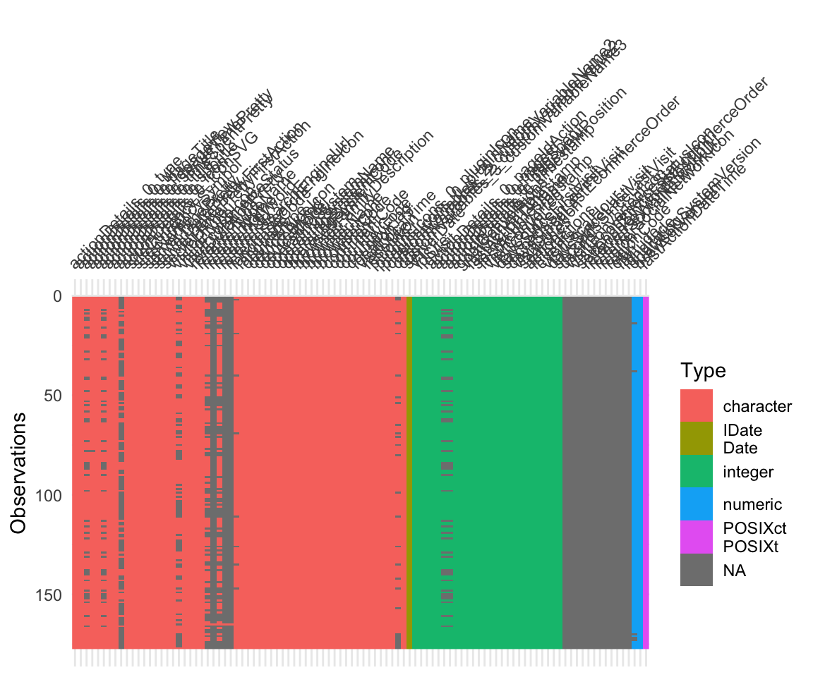
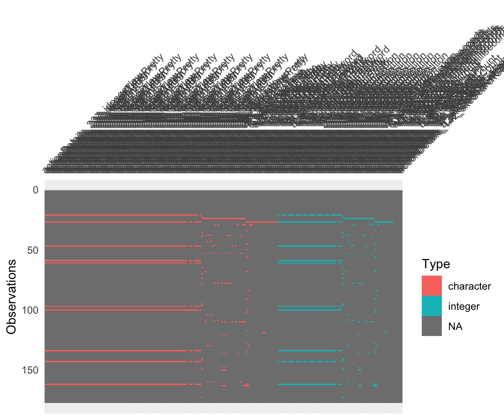

library(tidyverse)
#library(stringr) # Strings verarbeiten
library(here) # liest aktuelles Verzeichnis aus
library(visdat)
library(janitor)
library(writexl)
library(tictoc) # Zeitmessung
library(polars)
library(tidypolars)1 Lösung 02: Daten einlesen
1.1 Aufgaben
Daten einlesen
- Importieren Sie alle CSV-Dateien in R als Data Frames und binden Sie (zeilenweise) sie zu einem “langen” Data Frame.
- Wandeln Sie leere Strings in NAs um (für alle Spalten).
- Entfernen Sie alle leeren Zeilen und Spalten.
- Entfernen Sie alle konstanten Zeilen und Spalten.
- Überlegen Sie die Vor- und Nachteile, wenn Sie diese Aufgaben mit Excel lösen würden.
- Exportieren Sie die Datentabelle als Excel-Datei. Prüfen Sie dann die Excel-Datei; fällt Ihnen etwas Besonderes auf?
1.2 Lösungen
1.2.1 Setup
1.2.2 1
Wir definieren die Liste der zu importierenden CSV-Dateien:
data_folder <- "data-processed/data-raw-no-sensitive"
datafiles_list <-
list.files(path = paste0(here(), "/", data_folder),
pattern = "csv$",
full.names = TRUE)Und dann importieren wir die CSV-Dateien und “binden” sie “zeilenweise” in einen großen, Gesamt-Data-Frame:
tic() # `tictoc`
d <-
datafiles_list |>
map_dfr(read.csv) # dauert etwas...
toc()
## 24.816 sec elapsed“Funktionales Programmieren” ist ein Paradigma, das in R gut umsetzbar ist.
Ein “klassischer” Ansatz wäre eine For-Schleife, ungefähr so:
out <- list()
for (i in 1:length(datafiles_list)) {
out[[i]] <- read.csv(datafiles_list[i])
}Mit .id bekommt man eine laufende Nummer für jede eingehende CSV-Datei.
Puh! Wenn man jetzt nicht 5 Tage, sondern 100 oder 1000 oder 10000 Tage importieren müsste, hätte man ein echtes Perofrmanzproblem. Könnte man die Dteien nicht schneller einlesen?
map_XXX(list, fun) wendet die Funktion fun auf jedes Element von list an. map_dfr ist eine spezielle Variante, die die Ergebnisse in einem Data-Frame zusammenführt und zwar zeilenweise (row), daher _dfr.
Check:
d_small <-
d |>
select(1:50)
d_small |> glimpse()
## Rows: 177
## Columns: 50
## $ X <int> 1, 2, 3, 4, 5, 6, 7, 8, 9, 10, 11, 12…
## $ idSite <int> 1, 1, 1, 1, 1, 1, 1, 1, 1, 1, 1, 1, 1…
## $ idVisit <int> 2352, 2351, 2350, 2348, 2349, 2347, 2…
## $ actionDetails_0_type <chr> "action", "action", "action", "action…
## $ actionDetails_0_url <chr> "https://141.75.89.55/login?evalId=no…
## $ actionDetails_0_pageTitle <chr> "HAnS", "HAnS", "HAnS", "HAnS", "HAnS…
## $ actionDetails_0_pageIdAction <int> 1205, 1205, 6641, 5206, 933, 6719, 12…
## $ actionDetails_0_idpageview <chr> "7LcRJ3", "fOJq2y", "9T74s8", "RJKfLz…
## $ actionDetails_0_serverTimePretty <chr> "May 27, 2024 22:34:09", "May 27, 202…
## $ actionDetails_0_pageId <int> 1528485, 1528484, 1528483, 1528362, 1…
## $ actionDetails_0_timeSpent <int> 0, 0, 0, 3547, 29, 0, NA, 0, NA, 3, N…
## $ actionDetails_0_timeSpentPretty <chr> "0s", "0s", "0s", "59 min 7s", "29s",…
## $ actionDetails_0_pageviewPosition <int> 1, 1, 1, 1, 1, 1, NA, 1, NA, 1, NA, N…
## $ actionDetails_0_title <chr> "HAnS", "HAnS", "HAnS", "HAnS", "HAnS…
## $ actionDetails_0_subtitle <chr> "https://141.75.89.55/login?evalId=no…
## $ actionDetails_0_icon <chr> "", "", "", "", "", "", "plugins/Morp…
## $ actionDetails_0_iconSVG <chr> "plugins/Morpheus/images/action.svg",…
## $ actionDetails_0_timestamp <int> 1716849249, 1716849233, 1716836633, 1…
## $ goalConversions <int> 0, 0, 0, 0, 0, 0, 0, 0, 0, 0, 0, 0, 0…
## $ siteCurrency <chr> "EUR", "EUR", "EUR", "EUR", "EUR", "E…
## $ siteCurrencySymbol <chr> "€", "€", "€", "€", "€", "€", "€", "€…
## $ serverDate <chr> "2024-05-27", "2024-05-27", "2024-05-…
## $ visitServerHour <int> 20, 20, 17, 17, 16, 15, 15, 14, 14, 1…
## $ lastActionTimestamp <int> 1716842049, 1716842033, 1716829433, 1…
## $ lastActionDateTime <chr> "2024-05-27 20:34:09", "2024-05-27 20…
## $ siteName <chr> "HAnS", "HAnS", "HAnS", "HAnS", "HAnS…
## $ serverTimestamp <int> 1716842049, 1716842033, 1716829433, 1…
## $ firstActionTimestamp <int> 1716842049, 1716842033, 1716829433, 1…
## $ serverTimePretty <chr> "22:34:09", "22:33:53", "19:03:53", "…
## $ serverDatePretty <chr> "Monday, May 27, 2024", "Monday, May …
## $ serverDatePrettyFirstAction <chr> "Monday, May 27, 2024", "Monday, May …
## $ serverTimePrettyFirstAction <chr> "22:34:09", "22:33:53", "19:03:53", "…
## $ userId <lgl> NA, NA, NA, NA, NA, NA, NA, NA, NA, N…
## $ visitorType <chr> "new", "new", "returning", "returning…
## $ visitorTypeIcon <chr> "", "", "plugins/Live/images/returnin…
## $ visitConverted <int> 0, 0, 0, 0, 0, 0, 0, 0, 0, 0, 0, 0, 0…
## $ visitConvertedIcon <lgl> NA, NA, NA, NA, NA, NA, NA, NA, NA, N…
## $ visitCount <int> 1, 1, 7, 22, 1, 1, 140, 1, 139, 138, …
## $ visitEcommerceStatus <chr> "none", "none", "none", "none", "none…
## $ visitEcommerceStatusIcon <lgl> NA, NA, NA, NA, NA, NA, NA, NA, NA, N…
## $ daysSinceFirstVisit <int> 0, 0, 10, 46, 0, 0, 84, 0, 84, 84, 48…
## $ secondsSinceFirstVisit <int> 0, 0, 882898, 3980095, 0, 0, 7327338,…
## $ daysSinceLastEcommerceOrder <int> 0, 0, 0, 0, 0, 0, 0, 0, 0, 0, 0, 0, 0…
## $ secondsSinceLastEcommerceOrder <lgl> NA, NA, NA, NA, NA, NA, NA, NA, NA, N…
## $ visitDuration <int> 0, 0, 0, 3547, 31, 0, 1827, 0, 0, 16,…
## $ visitDurationPretty <chr> "0s", "0s", "0s", "59 min 7s", "31s",…
## $ searches <int> 0, 0, 0, 0, 0, 0, 0, 0, 0, 0, 2, 0, 0…
## $ actions <int> 1, 1, 1, 118, 3, 1, 16, 1, 1, 7, 139,…
## $ interactions <int> 1, 1, 1, 1, 2, 1, 0, 1, 0, 2, 5, 1, 1…
## $ referrerType <chr> "direct", "direct", "direct", "websit…Scheint zu passen.
Alternativ kann man den Namen der Datei hinzufügen:
d <-
datafiles_list |>
map_dfr(~ read.csv(.x) |>
mutate(filename = basename(.x))) # dauert etwas ...Die Tilde-Notation ~ ist eine Kurzschreibweise für eine Funktion. Man könnte also auch schreiben:
meine_funktion <- function(x) {
read.csv(x) |>
mutate(filename = basename(x))
}
datafiles_list |>
map_dfr(meine_funktion)Exkurs: Noch etwas Erklärung zu map. map ist eine Art von “Schleife”: Die darauf bezogene Funktion wird für jedes Element der Liste ausgeführt. Im folgenden Beispiel wird die Funktion basename auf jedes Element der Liste datafiles_list angewendet, also der Dateiname ohne Pfad zurückgegeben.
datafiles_list |>
map(basename)
## [[1]]
## [1] "matomo_export_2024-05-27.csv"
##
## [[2]]
## [1] "matomo_export_2024-05-28.csv"
##
## [[3]]
## [1] "matomo_export_2024-05-29.csv"
##
## [[4]]
## [1] "matomo_export_2024-05-30.csv"
##
## [[5]]
## [1] "matomo_export_2024-05-31.csv"
##
## [[6]]
## [1] "matomo_export_2024-06-01.csv"
##
## [[7]]
## [1] "matomo_export_2024-06-02.csv"
##
## [[8]]
## [1] "matomo_export_2024-06-03.csv"Check:
d_small <-
d |>
select(filename, everything()) |> # `filename` nach vorne ziehen
select(1:50)
d_small |> glimpse() # Blick reinwerfen
## Rows: 177
## Columns: 50
## $ filename <chr> "matomo_export_2024-05-27.csv", "mato…
## $ X <int> 1, 2, 3, 4, 5, 6, 7, 8, 9, 10, 11, 12…
## $ idSite <int> 1, 1, 1, 1, 1, 1, 1, 1, 1, 1, 1, 1, 1…
## $ idVisit <int> 2352, 2351, 2350, 2348, 2349, 2347, 2…
## $ actionDetails_0_type <chr> "action", "action", "action", "action…
## $ actionDetails_0_url <chr> "https://141.75.89.55/login?evalId=no…
## $ actionDetails_0_pageTitle <chr> "HAnS", "HAnS", "HAnS", "HAnS", "HAnS…
## $ actionDetails_0_pageIdAction <int> 1205, 1205, 6641, 5206, 933, 6719, 12…
## $ actionDetails_0_idpageview <chr> "7LcRJ3", "fOJq2y", "9T74s8", "RJKfLz…
## $ actionDetails_0_serverTimePretty <chr> "May 27, 2024 22:34:09", "May 27, 202…
## $ actionDetails_0_pageId <int> 1528485, 1528484, 1528483, 1528362, 1…
## $ actionDetails_0_timeSpent <int> 0, 0, 0, 3547, 29, 0, NA, 0, NA, 3, N…
## $ actionDetails_0_timeSpentPretty <chr> "0s", "0s", "0s", "59 min 7s", "29s",…
## $ actionDetails_0_pageviewPosition <int> 1, 1, 1, 1, 1, 1, NA, 1, NA, 1, NA, N…
## $ actionDetails_0_title <chr> "HAnS", "HAnS", "HAnS", "HAnS", "HAnS…
## $ actionDetails_0_subtitle <chr> "https://141.75.89.55/login?evalId=no…
## $ actionDetails_0_icon <chr> "", "", "", "", "", "", "plugins/Morp…
## $ actionDetails_0_iconSVG <chr> "plugins/Morpheus/images/action.svg",…
## $ actionDetails_0_timestamp <int> 1716849249, 1716849233, 1716836633, 1…
## $ goalConversions <int> 0, 0, 0, 0, 0, 0, 0, 0, 0, 0, 0, 0, 0…
## $ siteCurrency <chr> "EUR", "EUR", "EUR", "EUR", "EUR", "E…
## $ siteCurrencySymbol <chr> "€", "€", "€", "€", "€", "€", "€", "€…
## $ serverDate <chr> "2024-05-27", "2024-05-27", "2024-05-…
## $ visitServerHour <int> 20, 20, 17, 17, 16, 15, 15, 14, 14, 1…
## $ lastActionTimestamp <int> 1716842049, 1716842033, 1716829433, 1…
## $ lastActionDateTime <chr> "2024-05-27 20:34:09", "2024-05-27 20…
## $ siteName <chr> "HAnS", "HAnS", "HAnS", "HAnS", "HAnS…
## $ serverTimestamp <int> 1716842049, 1716842033, 1716829433, 1…
## $ firstActionTimestamp <int> 1716842049, 1716842033, 1716829433, 1…
## $ serverTimePretty <chr> "22:34:09", "22:33:53", "19:03:53", "…
## $ serverDatePretty <chr> "Monday, May 27, 2024", "Monday, May …
## $ serverDatePrettyFirstAction <chr> "Monday, May 27, 2024", "Monday, May …
## $ serverTimePrettyFirstAction <chr> "22:34:09", "22:33:53", "19:03:53", "…
## $ userId <lgl> NA, NA, NA, NA, NA, NA, NA, NA, NA, N…
## $ visitorType <chr> "new", "new", "returning", "returning…
## $ visitorTypeIcon <chr> "", "", "plugins/Live/images/returnin…
## $ visitConverted <int> 0, 0, 0, 0, 0, 0, 0, 0, 0, 0, 0, 0, 0…
## $ visitConvertedIcon <lgl> NA, NA, NA, NA, NA, NA, NA, NA, NA, N…
## $ visitCount <int> 1, 1, 7, 22, 1, 1, 140, 1, 139, 138, …
## $ visitEcommerceStatus <chr> "none", "none", "none", "none", "none…
## $ visitEcommerceStatusIcon <lgl> NA, NA, NA, NA, NA, NA, NA, NA, NA, N…
## $ daysSinceFirstVisit <int> 0, 0, 10, 46, 0, 0, 84, 0, 84, 84, 48…
## $ secondsSinceFirstVisit <int> 0, 0, 882898, 3980095, 0, 0, 7327338,…
## $ daysSinceLastEcommerceOrder <int> 0, 0, 0, 0, 0, 0, 0, 0, 0, 0, 0, 0, 0…
## $ secondsSinceLastEcommerceOrder <lgl> NA, NA, NA, NA, NA, NA, NA, NA, NA, N…
## $ visitDuration <int> 0, 0, 0, 3547, 31, 0, 1827, 0, 0, 16,…
## $ visitDurationPretty <chr> "0s", "0s", "0s", "59 min 7s", "31s",…
## $ searches <int> 0, 0, 0, 0, 0, 0, 0, 0, 0, 0, 2, 0, 0…
## $ actions <int> 1, 1, 1, 118, 3, 1, 16, 1, 1, 7, 139,…
## $ interactions <int> 1, 1, 1, 1, 2, 1, 0, 1, 0, 2, 5, 1, 1…1.2.3 1 - höhere Performanz
1.2.3.1 read_csv aus readr
tic() # `tictoc`
d <-
datafiles_list |>
map_dfr(read_csv) # dauert etwas...
## Error in `dplyr::bind_rows()`:
## ! Can't combine `..1$actionDetails_6_timeSpentPretty` <character> and `..2$actionDetails_6_timeSpentPretty` <double>.
toc()
## 7.843 sec elapsedLeider mit einem Fehler, weil die Spalte “timespentpretty” einmal als Text und einmal als Zahl interpretiert wird.
Hm, vielleicht so:
tic() # `tictoc`
d <-
datafiles_list |>
map_dfr(read_csv,
col_types = cols(actionDetails_6_timeSpentPretty = col_character())) # dauert etwas...
## Error in `dplyr::bind_rows()`:
## ! Can't combine `..1$actionDetails_2_timeSpentPretty` <double> and `..2$actionDetails_2_timeSpentPretty` <character>.
toc()
## 11.333 sec elapsedAucht nicht… Wir könnten alle relevanten Spalten suchen und mit col_character umwandeln. Aber probieren wir stattdessen noch etwas anderes.
1.2.3.2 data.table
library(data.table)
tic() # `tictoc`
d <-
datafiles_list |>
map_dfr(fread) # importiert Datendateien schnell
toc()
## 2.128 sec elapsedSuper schnell! Yeah! Faktor 14!
Mit polars kann man (vielleicht) auch saftige Performanz-Vorteile erzielen. Es gibt auch eine tidypolars-Erweiterung, die die tidyverse-Syntax auf polars-Data-Frames anwendet.
1.2.3.3 polars
Leider beschwert sich polar, dass die CSV-Dateien nicht alle die gleiche Anzahl an Spalten haben.
pl$scan_csv(datafiles_list)
## polars LazyFrame
## $explain(): Show the optimized query plan.
##
## Naive plan:
## Error: Execution halted with the following contexts
## 0: In R: in $print():
## 0: During function call [.main()]
## 1: Encountered the following error in Rust-Polars:
## schema lengths differ: 'csv scan' failed1.2.4 2
Anteil NAs:
mean(is.na(d))
## [1] 0.4680727Echte NAs:
d_with_true_nas <-
d |>
mutate(across(where(is.factor), as.character)) |> # Faktoren in Strings/Charaketer umwandeln
mutate(across(where(is.character), ~ na_if(., "")))Diese Syntax heißt sinngemäß auf Deutsch:
- Hey R, nimm den Datensatz
d - transformiere durch alle Spalte, wo der Typ der Spalte “Text” ist wie folgt:
- Setze
NAwenn der Wert in der jeweiligen Zelle""ist, also ein leerer Text
mean(is.na(d_with_true_nas))
## [1] 0.8929341Puh! Das ist ein großer Anteil.
Prüfen wir das lieber noch einmal.
d_with_true_nas_small <-
d_with_true_nas |>
select(1:100)vis_dat(d_with_true_nas_small) # aus `visdat`
Hm, sieht ja gar nicht nach so vielen NAs aus…
Vielleicht kommen die NAs erst weiter hinten?
d_with_true_nas_small <-
d_with_true_nas |>
select(3500:3700)vis_dat(d_with_true_nas_small)
Tatsächlich!
Was sagt uns dieser Befund?
1.2.5 3
d_no_empty_cols_no_empty_rows <-
d_with_true_nas |>
remove_empty(which = c("rows", "cols")) # aus `janitor`Check:
dim(d_with_true_nas)
## [1] 177 7742dim(d_no_empty_cols_no_empty_rows)
## [1] 177 7671Ein paar Spalten haben wir eingespart.
Es würde Sinn machen, sich diese komplett leeren Spalten näher anzuschauen. Warum sind sie überhaupt enthalten?
1.2.6 4
Das Paket janitor verrichtet “Hausmeisterarbeit” der Datenanalyse, wie etwa das Entfernen von konstanten Spalten.
d_no_constants <-
d_no_empty_cols_no_empty_rows |>
remove_constant(quiet = FALSE) # aus `janitor`Es bietet sich an, dass Ergebnis, d_no_constants abzuspeichern, um damit dann später wieder weiterzuarbeiten.
Man kann es als CSV-Datei abspeichern:
write.csv(d_no_constants, "data-processed/d_no_constants.csv")Oder als R-Datendatei:
write_rds(d_no_constants, "data-processed/d_no_constants.rds")Oder als Excel-Datei:
writexl::write_xlsx(d_no_constants, "data-processed/d_no_constants.xlsx")1.2.7 5
Eine (große) Menge an Tabellen zu einer Master-Exceltabelle zusammenzufügen ist schwierig. Mit einem Copy-Paste-Ansatz ist es nicht gesichert, dass die richtigen Spalten untereinander gesetzt werden, zumindest prüft es Excel nicht. Bei großen Tabellen wird die Sache unpraktisch (viel Scrollen) und langsam.
Schließlich – vielleicht am wichtigsten – ist das händische Vorgehen mit Excel nicht reprodzierbar. Es ist also nicht präzise zu beschreiben, was man (genau) gemacht hat. Daher fällt es auch schwierig, Fehler zu finden und den Prozess zu verbessern. Eine klare Kommunikation über das Vorgehen ist kaum möglich.
Wiederverwendung
MIT
Zitat
Mit BibTeX zitieren:
@online{untitled,
author = {},
langid = {de-DE}
}
Bitte zitieren Sie diese Arbeit als:
n.d.